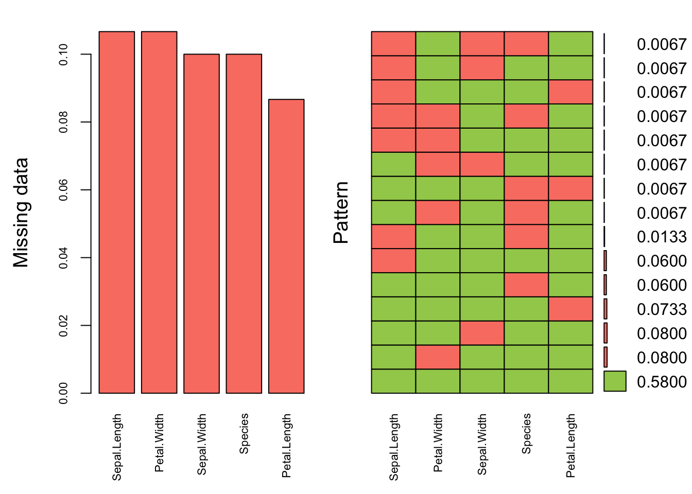
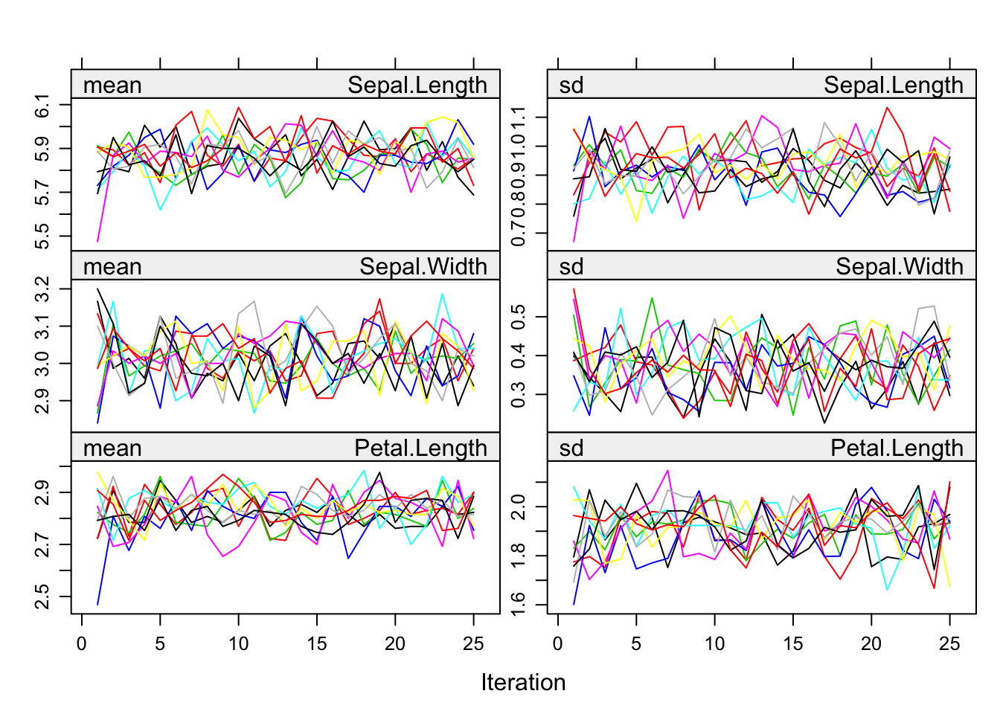
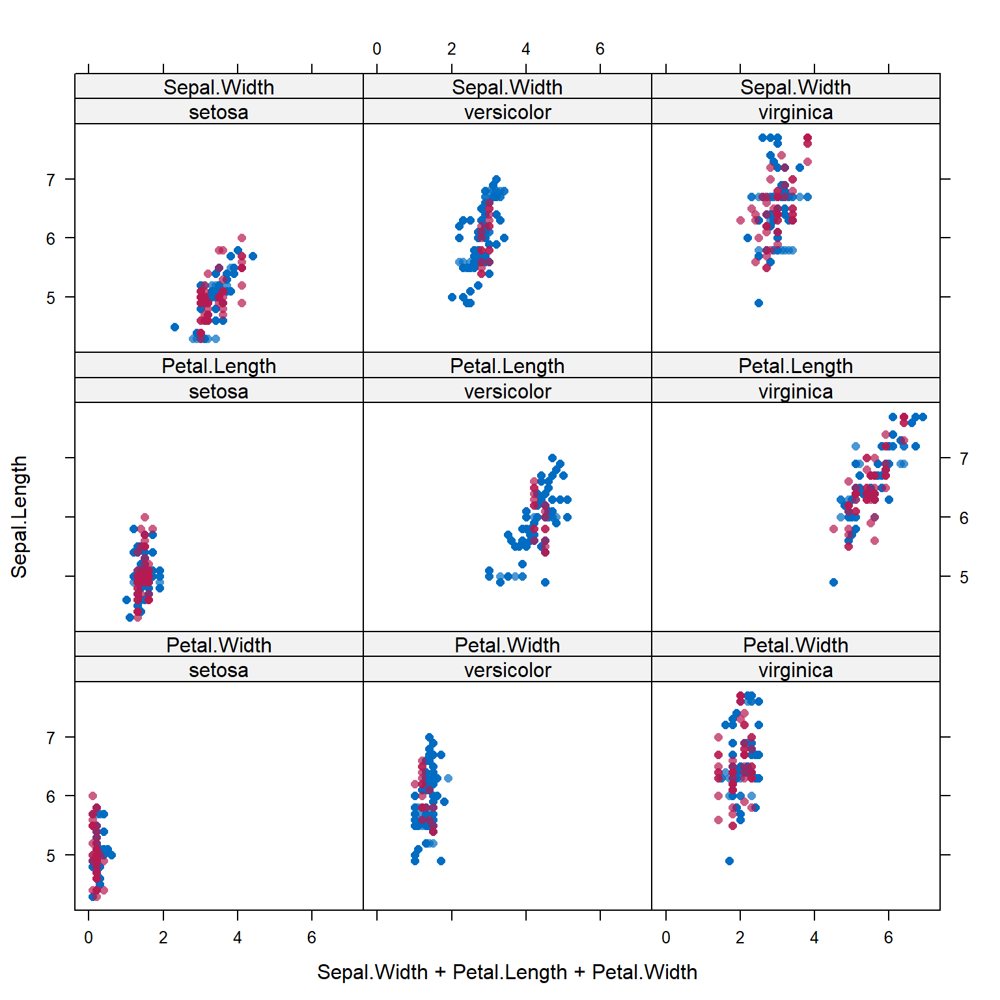
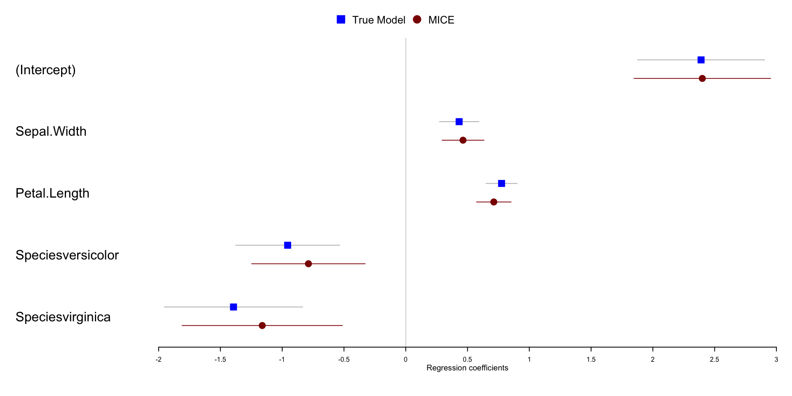

15.8 Example: Prescribed amount of missing.
We will demonstrate using Fisher’s Iris data (pre-built in with R) where we can artificially create a prespecified percent of the data missing. This allows us to be able to estimate the bias incurred by using these imputation methods.
For the iris data we set a seed and use the prodNA() function from the missForest package to create 10% missing values in this data set.
library(missForest)
set.seed(12345) # Note to self: Change the combo on my luggage
iris.mis <- prodNA(iris, noNA=0.1)
prop.table(table(is.na(iris.mis)))
##
## FALSE TRUE
## 0.9 0.1Visualize missing data pattern.
library(VIM)
aggr(iris.mis, col=c('darkolivegreen3','salmon'),
numbers=TRUE, sortVars=TRUE,
labels=names(iris.mis), cex.axis=.7,
gap=3, ylab=c("Missing data","Pattern"))
##
## Variables sorted by number of missings:
## Variable Count
## Petal.Width 0.14000000
## Sepal.Length 0.13333333
## Species 0.11333333
## Petal.Length 0.06000000
## Sepal.Width 0.05333333Here’s another example of where only 10% of the data overall is missing, but it results in only 58% complete cases.
15.8.1 Multiply impute the missing data using mice()
imp_iris <- mice(iris.mis, m=10, maxit=25, meth="pmm", seed=500, printFlag=FALSE)
summary(imp_iris)
## Class: mids
## Number of multiple imputations: 10
## Imputation methods:
## Sepal.Length Sepal.Width Petal.Length Petal.Width Species
## "pmm" "pmm" "pmm" "pmm" "pmm"
## PredictorMatrix:
## Sepal.Length Sepal.Width Petal.Length Petal.Width Species
## Sepal.Length 0 1 1 1 1
## Sepal.Width 1 0 1 1 1
## Petal.Length 1 1 0 1 1
## Petal.Width 1 1 1 0 1
## Species 1 1 1 1 0The Stack Exchange post listed below has a great explanation/description of what each of these arguments control. It is a very good idea to understand these controls.
https://stats.stackexchange.com/questions/219013/how-do-the-number-of-imputations-the-maximum-iterations-affect-accuracy-in-mul/219049#21904915.8.2 Check the imputation method used on each variable.
imp_iris$meth
## Sepal.Length Sepal.Width Petal.Length Petal.Width Species
## "pmm" "pmm" "pmm" "pmm" "pmm"Predictive mean matching was used for all variables, even Species. This is reasonable because PMM is a hot deck method of imputation.
15.8.3 Check Convergence

The variance across chains is no larger than the variance within chains.
15.8.4 Look at the values generated for imputation
imp_iris$imp$Sepal.Length
## 1 2 3 4 5 6 7 8 9 10
## 12 5.0 5.1 5.1 5.4 5.1 5.2 5.1 5.1 5.4 5.0
## 13 4.4 4.9 4.7 4.7 4.4 4.4 4.7 5.0 4.4 4.4
## 14 4.4 4.7 4.9 4.4 4.5 4.9 4.4 4.7 4.9 4.7
## 36 4.4 4.4 4.4 4.4 4.4 4.7 4.4 4.4 4.6 4.9
## 38 5.0 5.0 5.1 5.0 5.0 4.6 5.0 5.0 5.4 5.0
## 40 4.9 5.0 5.4 5.0 4.9 5.8 5.0 4.7 5.1 5.0
## 46 4.4 4.4 4.7 4.9 4.4 4.4 4.4 4.6 4.6 4.9
## 51 6.9 6.5 6.5 6.3 5.9 6.7 6.5 6.7 6.9 6.9
## 56 6.5 6.6 6.0 5.9 5.8 6.0 6.7 6.6 5.4 5.4
## 62 5.8 6.3 5.6 6.1 5.6 5.7 5.7 5.6 6.6 5.6
## 74 6.1 6.5 6.8 6.5 6.3 6.9 6.4 6.3 6.0 5.9
## 75 6.1 5.7 6.1 6.3 5.7 6.8 6.1 5.6 6.0 6.0
## 86 6.3 6.1 6.8 6.7 6.6 6.7 6.1 6.0 6.7 5.9
## 90 5.2 5.5 5.6 6.1 5.5 5.6 5.8 6.0 6.2 6.1
## 91 5.8 5.7 5.8 6.1 5.7 5.8 5.8 5.6 6.8 5.8
## 106 7.7 7.3 7.9 7.7 7.3 7.7 7.7 7.2 7.3 7.2
## 124 6.2 5.6 6.0 6.0 6.2 5.6 6.2 5.7 5.7 5.6
## 142 6.1 6.7 6.3 6.7 5.4 6.6 6.3 6.5 5.9 6.4
## 145 7.4 6.0 6.0 6.5 6.3 6.9 6.0 6.3 6.3 6.8
## 148 6.4 6.6 6.0 6.3 5.4 6.5 6.1 6.1 5.6 6.3This is just for us to see what this imputed data look like. Each column is an imputed value, each row is a row where an imputation for Sepal.Length was needed. Notice only imputations are shown, no observed data is showing here.
15.8.5 Create a complete data set by filling in the missing data using the imputations
Action=1 returns the first completed data set, action=2 returns the second completed data set, and so on.
15.8.5.1 Alternative - Stack the imputed data sets in long format.
By looking at the names of this new object we can confirm that there are indeed 10 complete data sets with \(n=150\) in each.
15.8.6 Visualize Imputations
Let’s compare the imputed values to the observed values to see if they are indeed “plausible” We want to see that the distribution of of the magenta points (imputed) matches the distribution of the blue ones (observed).
Univariately

Multivariately

Analyze and pool All of this imputation was done so we could actually perform an analysis!
Let’s run a simple linear regression on Sepal.Length as a function of Sepal.Width,
Petal.Length and Species.
model <- with(imp_iris, lm(Sepal.Length ~ Sepal.Width + Petal.Length + Species))
summary(pool(model))
## estimate std.error statistic df p.value
## (Intercept) 2.3545749 0.30074385 7.829171 78.77964 1.904299e-11
## Sepal.Width 0.4299370 0.09267795 4.639043 84.97716 1.258424e-05
## Petal.Length 0.8040298 0.06995969 11.492758 120.07136 0.000000e+00
## Speciesversicolor -1.0387902 0.23870303 -4.351810 108.40518 3.067926e-05
## Speciesvirginica -1.5565325 0.30847821 -5.045843 123.77749 1.568964e-06Pooled parameter estimates \(\bar{Q}\) and their standard errors \(\sqrt{T}\) are provided, along with a significance test (against \(\beta_p=0\)). Note that a 95% interval must be calculated manually.
Digging deeper into the object created by pool(model), specifically the pooled list, we can pull out additional information including the number of missing values, the fraction of missing information (fmi) as defined by Rubin (1987), and lambda, the proportion of total variance that is attributable to the missing data (\(\lambda = (B + B/m)/T)\).
| estimate | ubar | b | t | lambda | fmi | |
|---|---|---|---|---|---|---|
| (Intercept) | 2.355 | 0.073 | 0.016 | 0.090 | 0.191 | 0.211 |
| Sepal.Width | 0.430 | 0.007 | 0.001 | 0.009 | 0.173 | 0.192 |
| Petal.Length | 0.804 | 0.004 | 0.000 | 0.005 | 0.081 | 0.096 |
| Speciesversicolor | -1.039 | 0.051 | 0.006 | 0.057 | 0.111 | 0.127 |
| Speciesvirginica | -1.557 | 0.088 | 0.006 | 0.095 | 0.071 | 0.085 |
15.8.7 Calculating bias
The iris data set had no missing data to begin with. So we can calculate the “true” parameter estimates…
and find the difference in coefficients.
The variance of the multiply imputed estimates is larger because of the between-imputation variance.
library(forestplot)
te.mean <- summary(true.model)$coefficients[,1]
mi.mean <- summary(pool(model))[,1]
te.ll <- te.mean - 1.96*summary(true.model)$coefficients[,2]
mi.ll <- mi.mean - 1.96*summary(pool(model))[,2]
te.ul <- te.mean + 1.96*summary(true.model)$coefficients[,2]
mi.ul <- mi.mean + 1.96*summary(pool(model))[,2]
names <- names(coef(true.model))
forestplot(names,
legend = c("True Model", "MICE"),
fn.ci_norm = c(fpDrawNormalCI, fpDrawCircleCI),
mean = cbind(te.mean, mi.mean),
lower = cbind(te.ll, mi.ll),
upper = cbind(te.ul, mi.ul),
col=fpColors(box=c("blue", "darkred")),
xlab="Regression coefficients",
boxsize = .1
)